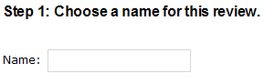
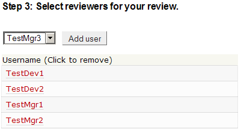
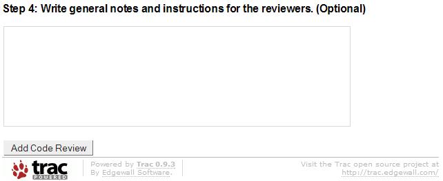

This page facilitates creating a new code review by allowing a user to specify reviewers, files to review, and giving the review a name. In addition, this page is accessed when resubmitting a review, which allows altering of code reviews by duplicating the fields of an existing review and closing the original review.

| The first option presented is to choose a name for the code review. This will be the name that will appear on the main page when the code review is created. A name cannot be longer than fifty characters in length. |
| Next, the user is presented with the Subversion repository tied to TRAC. |
| Navigation through this repository is identical to navigation through the TRAC repository. Clicking on folders navigates through the folder. Clicking on files will open that file if an HTML preview is available. To navigate back up, click on the corresponding folder above the repository (for example, where it says "root"). |
| Once a file has been opened, the repository browser will look similar to this: |
| In order to select a file to be added into the peer review, click the corresponding lines of code on the left that you would like to add. For example, here the user clicked on 82 and clicked on 87 to select lines 82-87. Alternately, the user could type those numbers into the corresponding text boxes below the repository browser. |
| Once the correct lines of code have been selected, click "Add File" to add the code to the code review. The location will appear in the table below the repository browser, along with the line numbers and revision number. |
| Once the user has selected files for the code review, reviewers may be
added: |
|

|
| Select reviewers from the dropdown list and click "Add user" to add them to the table of reviewers. This is the list of people that will vote on whether or not the code for the current code review is acceptable. Reviewers may be removed by clicking their names in the reviewers table. |

| Finally, general comments can be added to the code review. These comments can be seen by anyone viewing the code review. |
| After adding general comments, the user is ready to add the code review. Click "Add Code Review" at the bottom of the page to do this. The user will be taken to the View Code Review page for this code review. |
Copyright 2005-2006 Team5